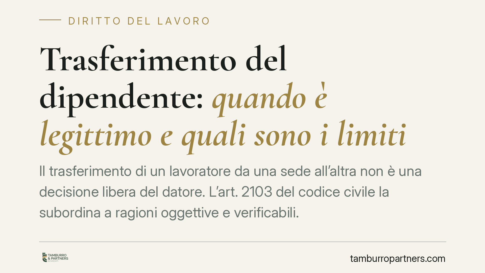

Trasferimento del dipendente: quando è legittimo e quali sono i limiti
Il trasferimento di un lavoratore da una sede all'altra non è una decisione libera del datore. L'art. 2103 del codice civile la subordina a ragioni oggettive e verificabili. Capire quando il trasferimento è legittimo e quando può essere contestato è essenziale per tutelare la propria posizione senza compromettere il rapporto di lavoro.

Inquadramento normativo
Il potere del datore di modificare la sede di lavoro del dipendente trova la sua fonte nell'art. 2103 del codice civile. La norma stabilisce un principio chiaro: il lavoratore non può essere trasferito da un'unità produttiva a un'altra se non per comprovate ragioni tecniche, organizzative e produttive.
Due elementi meritano attenzione. Primo, non basta invocare genericamente un'esigenza aziendale: le ragioni devono essere reali, concrete e riconducibili a scelte dell'impresa. Secondo, l'onere di provarle grava sul datore di lavoro, non sul dipendente. Chi contesta il trasferimento non deve dimostrare che le ragioni sono false; è l'azienda a dover dimostrare che sono fondate.
La Cassazione ha più volte precisato che al giudice non spetta sindacare l'opportunità della scelta imprenditoriale — cioè valutare se fosse la decisione migliore — ma verificare che esista un effettivo nesso tra le esigenze dichiarate e lo spostamento del singolo lavoratore. In altre parole: le ragioni ci sono, ma riguardano proprio quel dipendente?
Cosa cambia per il lavoratore
Il trasferimento incide in modo rilevante sulla vita del dipendente. Non si tratta solo di una diversa sede: cambiano tempi di spostamento, costi, equilibri familiari. Per questo la legge non lascia il potere aziendale privo di argini.
Un trasferimento è illegittimo quando manca la ragione oggettiva richiesta dalla norma, oppure quando la ragione dichiarata è solo un pretesto. È il caso, ad esempio, del trasferimento adottato in risposta a una richiesta di diritti da parte del lavoratore, o per allontanare un dipendente sgradito. Qui si parla di trasferimento ritorsivo o discriminatorio, che la giurisprudenza sanziona con particolare severità.
Esistono poi tutele rafforzate. Il lavoratore con disabilità, o chi assiste un familiare disabile ai sensi della legge 104/1992, gode di limiti più stringenti: il trasferimento in questi casi richiede il consenso dell'interessato, salve specifiche eccezioni.
Attenzione a non confondere il trasferimento con la trasferta. La trasferta è temporanea e non muta la sede stabile di lavoro; il trasferimento è definitivo e comporta il cambiamento del luogo di adibizione. Le regole e le tutele sono diverse.
Le conseguenze del trasferimento illegittimo
Se il trasferimento è privo delle ragioni richieste, il lavoratore può contestarlo e chiedere il rientro nella sede originaria. Nel frattempo, la situazione va gestita con cautela: rifiutarsi puramente e semplicemente di raggiungere la nuova sede può esporre a contestazioni disciplinari, fino al licenziamento.
La via prudente è quella di manifestare formalmente il dissenso, riservandosi le azioni legali, senza però interrompere unilateralmente la prestazione. La valutazione va fatta caso per caso, perché il confine tra legittima protesta e inadempimento è sottile.
Quando il giudice accerta l'illegittimità, può disporre il rientro e riconoscere il risarcimento dei danni subiti, compresi quelli economici legati agli spostamenti e, nei casi più gravi, quelli non patrimoniali.
Cosa fare in concreto
- Chiedi le motivazioni per iscritto. Domanda formalmente al datore quali siano le ragioni tecniche, organizzative o produttive alla base del trasferimento.
- Conserva la documentazione. Raccogli comunicazioni, email e ordini di servizio: sono elementi utili a ricostruire la vicenda.
- Non abbandonare la prestazione senza tutele. Manifesta il dissenso formalmente, ma valuta con un professionista prima di rifiutare di raggiungere la nuova sede.
- Verifica le tutele speciali. Se rientri nelle protezioni della legge 104/1992 o hai altre condizioni particolari, segnalalo subito per iscritto.
- Rispetta i termini. Le contestazioni vanno mosse tempestivamente: agire con ritardo può indebolire la posizione.
Consigliamo di far esaminare la lettera di trasferimento da un legale prima di assumere qualsiasi iniziativa. Una risposta impulsiva può compromettere una posizione altrimenti solida.
Disclaimer
Contributo informativo a cura di Tamburro & Partners - Avv. Giuseppe Tamburro. Non costituisce parere legale.
Ogni storia di lavoro ha i suoi tempi.
Se gestisci HR e vuoi un confronto su contenzioso, ispezioni o licenziamenti, scrivi allo studio. Ti rispondiamo entro un giorno lavorativo.